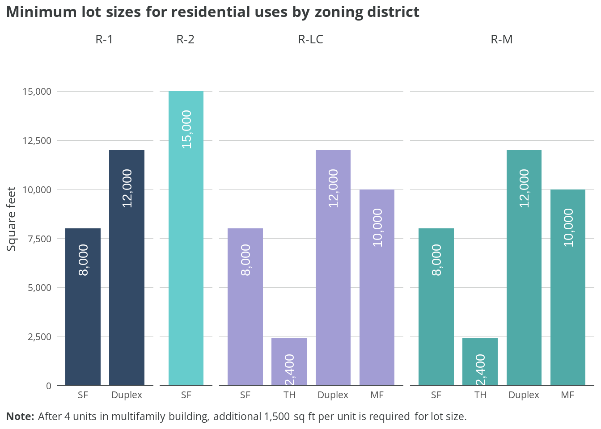
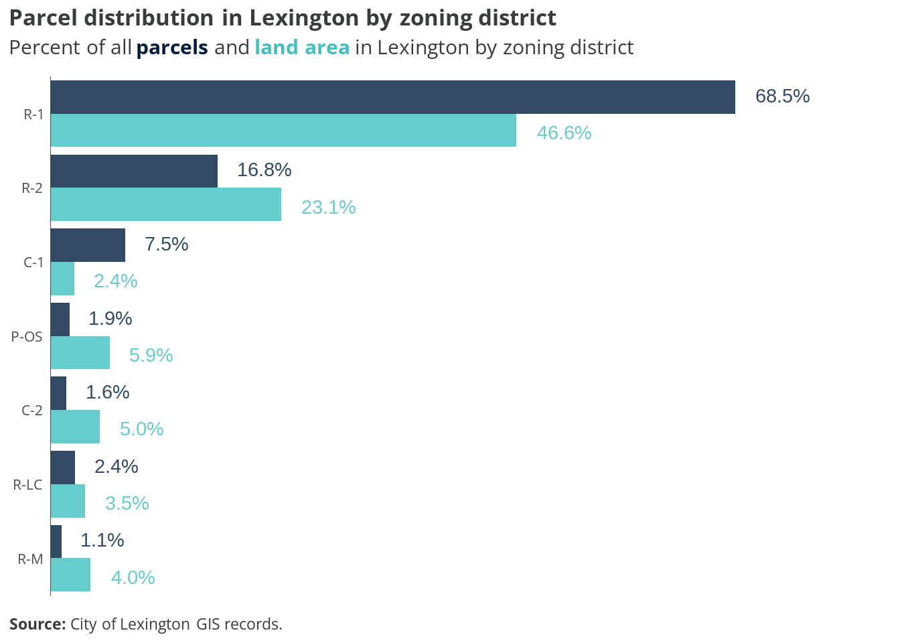
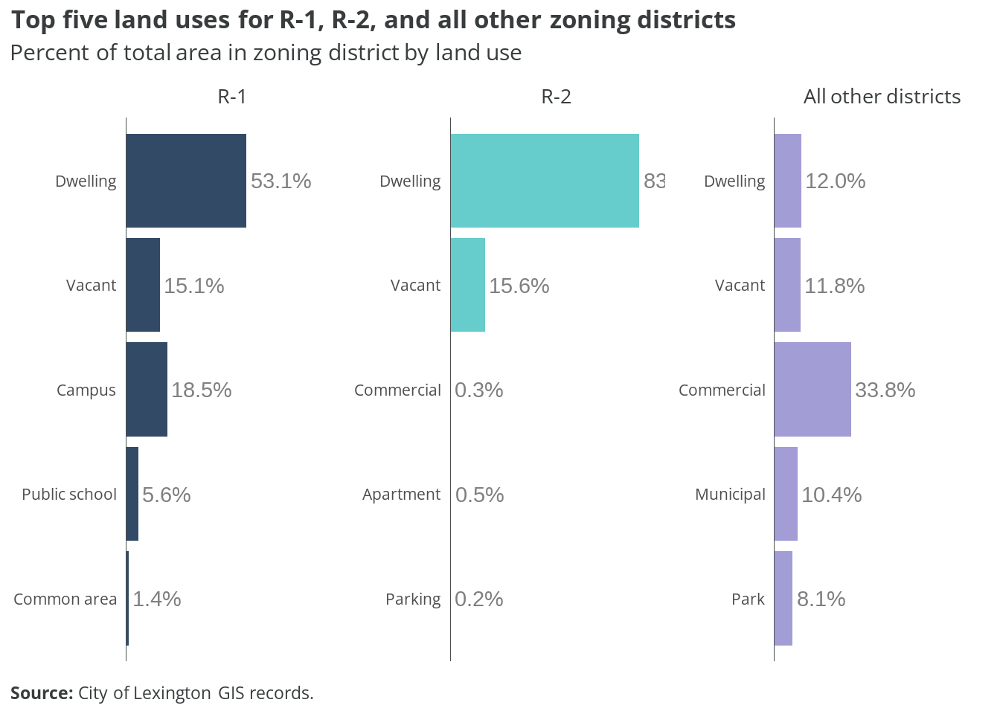
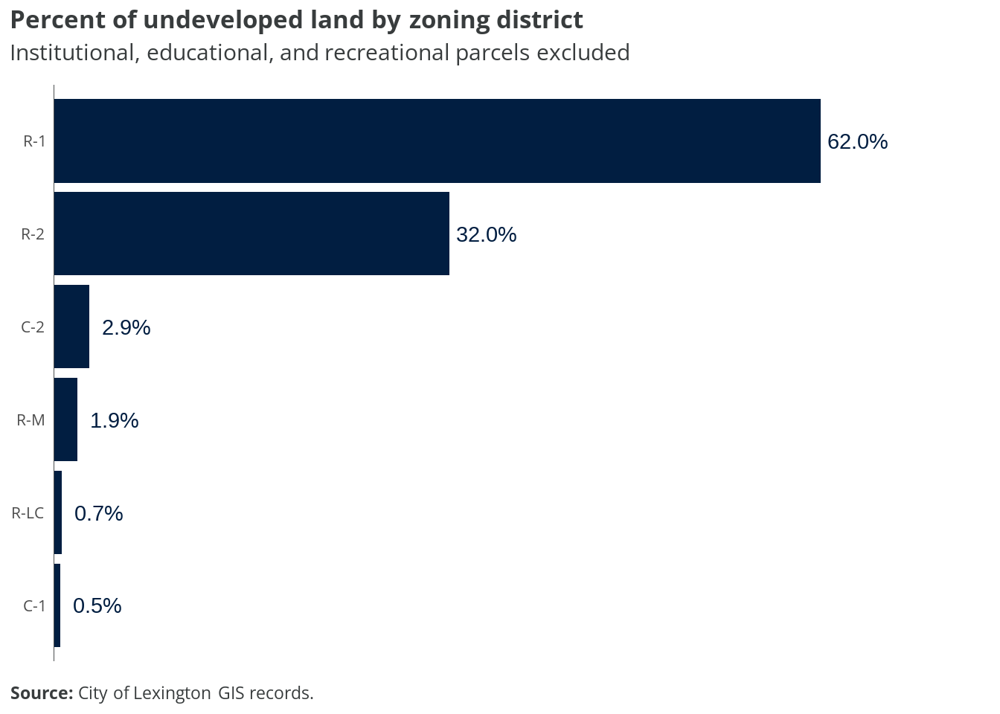
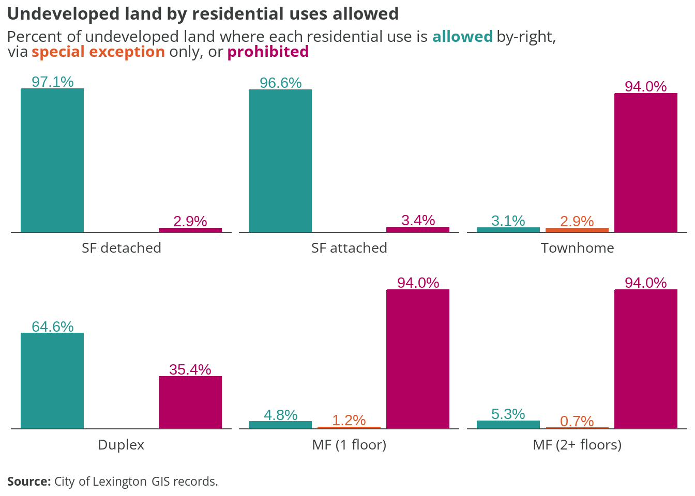

| Zone | Name | Type |
|---|---|---|
| R-1 | Residential General | Primarily Residential |
| R-2 | Suburban Residential | Primarily Residential |
| R-M | Residential Multifamily | Primarily Residential |
| R-LC | Residential-Light Commercial | Mixed with Residential |
| C-1 | Central Business | Mixed with Residential |
| C-2 | General Commercial | Mixed with Residential |
| P-OS | Parks and Open Space | Nonresidential |
5 Lexington
This section examines current residential zoning patterns in the City of Lexington.
The existing zoning ordinance dictating land use and development was written in 2017. It replaced the previous chapter, which was adopted in 1976.
5.1 Zoning districts
The City has 7 base zoning districts. Not shown are the overlay districts for floodplains and other special requirements.
The map below shows the base zoning for each parcel in the city. Parcels with “NA” zoning in the city’s data include much of the VMI campus.
Of those base districts, six allow some form residential uses either by right or conditionally.
The table below shows the allowances for different residential uses in those districts.
| Zone | SF detached | SF attached | Townhome | Duplex | Multifamily (1 floor) | Multifamily (2+ floors) | ADU |
|---|---|---|---|---|---|---|---|
| R-1 | A | A | P | A | P | P | A |
| R-2 | A | A | P | P | P | P | A |
| R-M | A | A | A | A | A | A | A |
| R-LC | A | A | A | A | S | S | A |
| C-1 | A | P | A | P | S | A | A |
| C-2 | P | P | S | P | A | A | P |
Allowance key:
- A = Allowed by-right
- S = Special exception (conditional use permit and public hearing required)
- P = Prohibited
Residential use definitions:
- SF detached = Single-family home with no walls shared with other dwelling units
- SF attached = Two or more single-family dwellings sharing two or more common walls, each on its own individual lot
- Townhome = A grouping of three or more attached single-family dwellings in a row in which each unit has its own front and rear access
- Duplex = Building with two separate dwelling units
- Multifamily = Building with three or more separate dwelling units
- ADU = Accessory apartment
Single-family detached homes are by-right in all but the C-2 district.
Single-family attached homes are by-right in all but the C-1 and C-2 districts.
Townhomes are only allowed by-right in the R-M, R-LC, and C-1 districts, allowed with a permit in C-2, and prohibited in R-1 and R-2.
Duplexes are by-right in R-1, R-M, and R-LC; they are not allowed in all other districts.
Multifamily (1 floor) developments are by-right in R-M and C-2, and allowed with conditional use permit in R-LC and C-1. Multifamily (2+ floors) developments are the same, but also by-right in C-1.
Accessory apartments are a by-right use everywhere but C-2.
5.2 Lot requirements
The zoning ordinance also stipulates specific geometric criteria that must be met before properties can be developed into homes. These include minimum lot area, road frontage, setbacks (front, side, and rear), and in some cases structure height.
The chart below shows the base minimum lot sizes for different residential uses, derived from the “Lot Requirements Table: Area and Yard Regulations” (420 Attachment 2) in the zoning ordinance.

Minimum lot size requirements vary significantly by both zoning district and housing type. In R-1 zones, single-family homes require 8,000 square feet while duplexes need 12,000 square feet. R-2 has the largest minimum lot size at 15,000 square feet for single-family homes.
In both R-LC and R-M districts, there’s a graduated scale: single-family homes need 8,000 square feet, duplexes 12,000 square feet, and townhomes just 2,400 square feet. Multi-family developments in these districts start at 10,000 square feet for up to 4 units, with an additional 1,500 square feet required for each unit beyond that.
5.3 Distribution

Parcels zoned R-1 are overwhelmingly the most common (68.5%) and comprise nearly half of Lexington’s land area (46.6%). R-2 properties make up the second largest share, with 16.8% of parcels and 23.1% of land area.
Commercial zones (C-1 and C-2) together account for about 9% of parcels but only 7.4% of land area. The remaining zoning districts (P-OS, R-LC, and R-M) each represent small portions of both parcels and land area, with none exceeding 6% of total land area.
5.4 Land use by district
The charts below show how parcels within the City’s two most common zoning districts are currently used.

In R-1 districts, dwellings are the predominant land use at 53.1% of total area, followed by campus uses (18.5%) and vacant land (15.1%). R-2 districts are even more heavily residential, with dwellings accounting for 83% of land area and vacant parcels making up most of the remainder at 15.6%.
In all other zoning districts combined, commercial uses dominate at 33.8% of land area, while dwellings make up just 12%. Municipal uses and vacant land each account for about 11% of the remaining districts’ area, with parks taking up 8.1%.
No “duplex” land use designation
Duplexes are allowed in R-1, R-M, and R-LC by-right; however, the land use codes currently used by the City do not include a standalone duplex designation. According to the latest American Community Survey estimates, there are approximately 290 2-unit dwellings in the city. It is possible these properties are included in the “Apartment” land use code.
5.5 Undeveloped lots

R-1 zoned areas contain the highest proportion of undeveloped land at 62%, followed by R-2 areas at 32%. The remaining zoning districts have very low percentages of undeveloped land, with C-2 at 2.9%, R-M at 1.9%, and both R-LC and C-1 under 1%. This pattern suggests that most of Lexington’s development potential lies within its residential zones, particularly R-1 districts, while commercial and other districts are largely built out.

Nearly all undeveloped land in Lexington allows single-family homes by-right, with 97.1% permitting detached homes and 96.6% allowing attached single-family homes. The picture changes dramatically for other housing types: while duplexes are allowed by-right on 64.6% of undeveloped land, they’re prohibited on 35.4%.
Multi-family housing faces the strictest restrictions, with both one-story and multi-story developments prohibited on 94% of undeveloped land. Townhomes face similar restrictions, being prohibited on 94% of undeveloped parcels, with only 3.1% allowing them by-right and 2.9% permitting them through special exception.
The maps below show what types of residential uses are allowed across presently undeveloped properties in the city. Parcels with any existing improvements are excluded.
5.6 Takeaways
Lexington’s 2017 zoning code creates a relatively straightforward framework of seven districts, but establishes strong hierarchies in housing types and development potential. The code’s structure and implementation raise several notable points about housing diversity and development capacity.
The overwhelming dominance of R-1 zoning (68.5% of parcels, 46.6% of land area) combined with large minimum lot sizes creates a baseline of low-density development across much of the city. Given that R-1 contains 62% of the city’s undeveloped land, this represents a significant constraint on future housing development potential.
Current treatment of housing types reveals stark disparities:
- Nearly all undeveloped land (97%) allows single-family homes
- Despite by-right duplex permissions in R-1, R-M, and R-LC, the city lacks a mechanism to track these properties in its land use codes
- 94% of undeveloped land prohibits townhomes and multifamily housing
- Minimum lot sizes are significantly larger for any housing type beyond single-family (e.g., 12,000 sq ft for duplexes vs 8,000 sq ft for single-family in R-1)
Several opportunities for code modernization emerge:
- Create a specific land use designation for duplexes to better track existing two-unit dwellings
- Consider reducing minimum lot sizes, particularly in R-1 and R-2, to enable more efficient use of available land
- Expand housing type permissions in R-2, which holds 32% of undeveloped land but currently prohibits everything except single-family homes
- Review the substantial setback and lot width requirements that may further constrain development beyond the basic lot size minimums
These changes would help maximize the development potential of Lexington’s limited remaining land while maintaining appropriate standards for community character and infrastructure capacity.